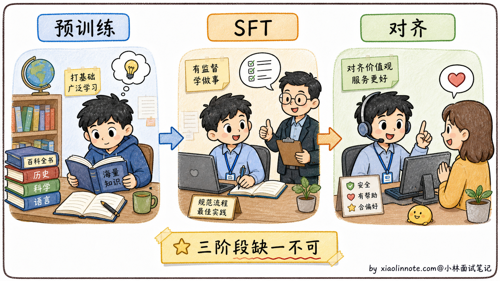
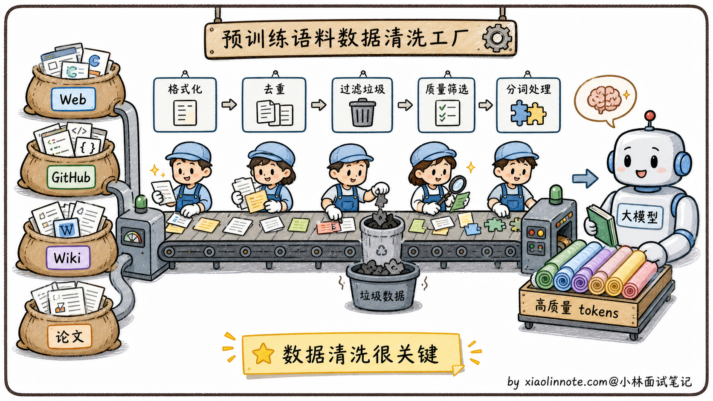
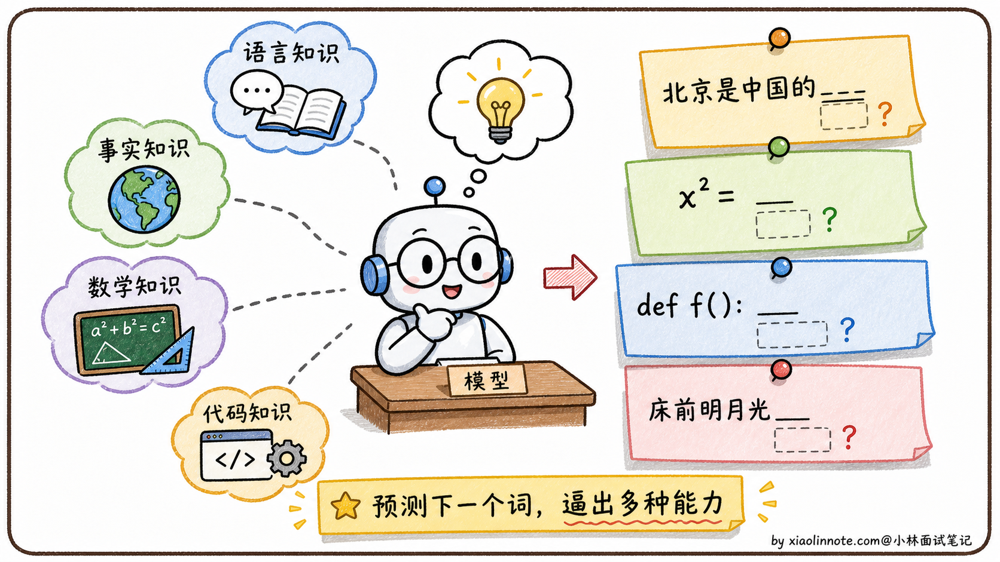
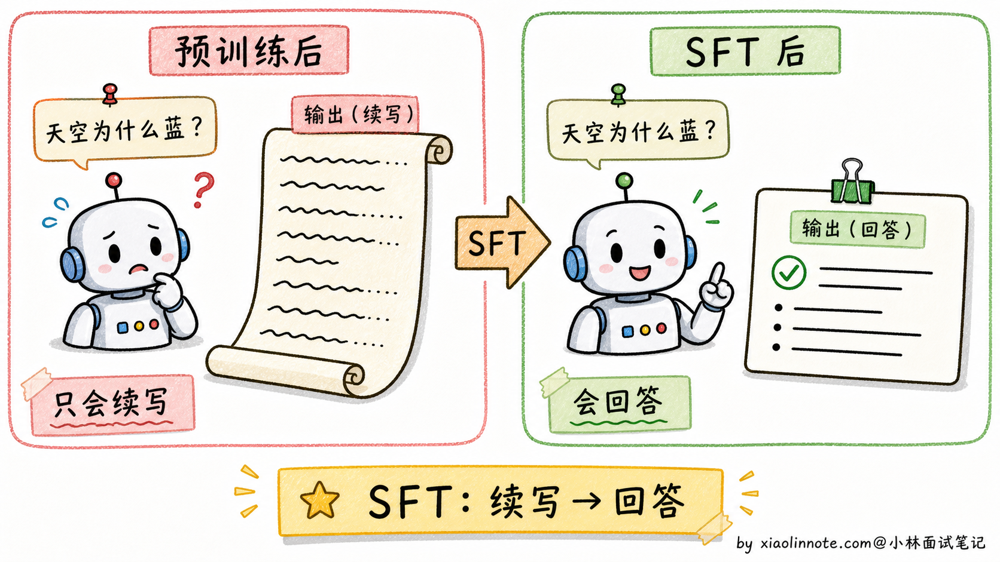
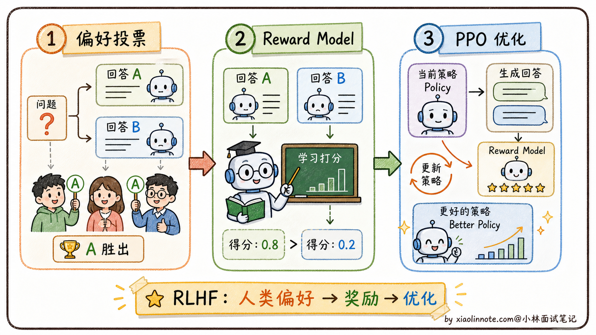
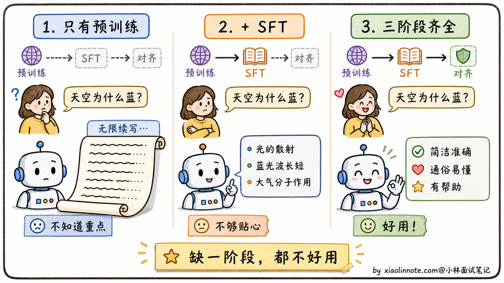

本篇目录
6. 大模型是怎么训练出来的？
👔面试官：来讲讲大模型是怎么训练出来的？
🙋♂️我：训练就是给模型喂大量数据让它学习，最后能回答各种问题。
👔面试官：……「喂大量数据」具体喂什么？数据从哪来？训练目标是什么？为什么训完一次就能回答问题？
🙋♂️我：哦哦，应该是给它 prompt 和答案对，让它学会回答？
👔面试官：你说的是 SFT 阶段，但 SFT 之前还有更基础的预训练阶段，没有预训练 SFT 啥都干不成。再说，SFT 之后还有对齐阶段，三个阶段缺一不可。这三件事你能讲清楚分别在做什么、为什么需要、为什么缺一不可吗？
🙋♂️我：呃……三个阶段我大概知道有，但具体差别讲不清楚。
👔面试官：典型的「知道有但讲不清」。预训练是「让模型读万卷书」，SFT 是「让它学会问答」，对齐是「让它好好说话」。这三件事的训练目标完全不同，数据格式完全不同，缺少任何一个模型都用不起来。回去搞清楚再来。
到这里我才老实了，训练大模型真不是「喂数据」三个字。它是「预训练 → SFT → 对齐」三段流水线，每一段解决的问题不同，顺序还动不得。把这三段各自的角色拆开讲，整条主线才立得起来。
💡 简要回答
大模型训练我理解是分三个阶段，每个阶段解决不同层次的问题。我用一个类比来记忆：预训练就像一个人从小到大读了海量的书，积累了语言能力和世界知识，训练目标就是「预测下一个词」，简单但威力巨大；SFT 是给这个博学的人做面试培训，让他学会把知识转化成有问有答的对话形式，而不是一直续写文章；对齐阶段是给他做职业素养培训，用 RLHF 或 DPO 让他的回答方式更符合人类偏好、更安全。三个阶段缺一不可，预训练决定能力天花板，SFT 给格式，对齐给价值观，这是目前所有主流大模型训练的基本框架。
📝 详细解析
先理一个直觉：训练大模型为什么要分阶段？
很多人第一次听说「大模型训练分三个阶段」会很困惑，为什么不能一次性训完？为什么要分这么麻烦？
要回答这个问题，先做个类比。培养一个能在公司独当一面的员工，至少要经过三件事。
他得先有基础知识，从小学读到大学，掌握语言、数学、逻辑、各种学科常识。没有这个基础，进了公司啥也干不了。然后他得会公司的流程，哪怕他知识再渊博，进了公司也不知道「怎么写汇报邮件、怎么和客户对话、怎么提交工单」。这些不是知识问题，是「适配工作场景」的问题。最后他得懂职业素养，知道该说什么、不该说什么、什么时候要谦虚、什么时候要拒绝不合理要求。这些不是技能问题，是「价值观和分寸感」的问题。
大模型的三个训练阶段对应的就是这三件事。预训练让它读万卷书，SFT 让它学会问答格式，对齐让它学会好好说话。每个阶段解决一个完全不同层面的问题，所以缺一不可。

有了这个类比打底，下面分别看每个阶段具体在做什么。
第一阶段：预训练，读万卷书
预训练是大模型能力的根基，所有上层能力都从这里来。
数据从哪来？
预训练用的数据规模大到夸张。GPT-3 用了 3000 亿 token，Llama 3 用了 15 万亿 token，相当于把整个互联网的公开文本资源差不多都吞了一遍。
具体数据来源你可以理解成「能爬到的所有公开文本」，互联网网页（Common Crawl 项目专门干这事）、GitHub 上的所有代码、维基百科全部条目、扫描过的图书、学术论文、新闻报道，几乎所有形式的人类知识都在里面。
但原始爬到的数据是不能直接用的，里面充满垃圾，包括重复内容、机器生成的乱码、低质量论坛灌水、广告页面这些。预训练前要做大量清洗工作，去重、过滤低质量内容、识别语言、剔除有害信息。一个高质量训练集的清洗成本可能比模型训练本身还贵，这是大模型公司之间的核心竞争力之一。

训练目标长什么样？
这一点其实很反直觉。你猜大模型的训练目标是什么？是「回答正确率」？还是「写得通不通顺」？都不是，是一个看起来简单到让人怀疑的任务，预测下一个 token。
学术上叫 CLM（Causal Language Modeling，因果语言模型）。每条训练样本就是「给前 N 个 token，预测第 N+1 个 token」，对整个语料库做这件事，反复调整模型参数让它的预测越来越准。
「预测下一个词」就这么简单？没错，就是这么简单。但威力大到吓人。为什么呢？因为想要在不同上下文里准确预测下一个词，模型必须真的理解语法、记住事实、推理逻辑。
举几个例子你就明白了。要预测「北京是中国的____」，模型必须知道「北京是首都」这个事实；要预测「如果 x=2，那么 x²=____」，模型必须会算数；要预测一段代码的下一行，模型必须理解编程逻辑；要预测一首诗的下一句，模型必须懂韵律和意境。所有这些能力都被「预测下一个词」这一个目标逼着学会了。

这就是为什么「预测下一个词」这个看起来简单的目标，能造就一个能写代码、能解数学题、能创作诗歌的通用智能模型。简单的目标 + 海量数据 = 涌现的智能。
计算开销有多大？
惊人的离谱。训练 GPT-3 据估算花了约 3.14×10²³ 次浮点运算（FLOPs）。这是什么概念？用一张 A100 GPU 算需要 36 万年。OpenAI 实际是用了几百到几千张 GPU 并行训练了几个月才搞定。算力成本上千万美元，这就是为什么早期只有少数巨头能玩得起预训练。
预训练完之后，模型有了一个「大脑」，里面塞满了语言能力和世界知识。但这个大脑还有个问题，它不会回答问题，只会续写。
第二阶段：SFT，从「续写机器」变「对话机器」
预训练后的模型本质上是一个「文本续写机器」。
什么意思？你给它一段文字，它会继续往下写，但不真的理解你在「问问题」。打个比方，你问它「天空为什么是蓝色的？」，它可能续写成「天空为什么是蓝色的？这是个有趣的科学问题。今天天气不错，让我们看看……」一直发散下去，根本没在回答你。

SFT 的目的就是把这个「续写机器」改造成「对话机器」。
它怎么做？训练数据格式变了，从「连续文本」变成「(指令，期望回答) 对」，比如这种格式：
指令：请用简单易懂的语言解释为什么天空是蓝色的
回答：天空呈现蓝色是因为大气中的散射现象。太阳光包含所有颜色，
当光进入大气层时，氮气和氧气分子会将短波长的蓝光散射到各个方向，
而长波长的红光穿透能力更强，散射较少。所以我们从任何方向看天空，
都能看到散射来的蓝光。模型在这种数据上继续训练，慢慢学会「啊，看到这种格式我就该给一个完整答案，不要无限续写下去」。这就是从「续写模式」切换到「对话模式」的关键。
数据质量比数量更重要。Llama 2 用了大约 100 万条 SFT 数据，但每条都是精心标注的。AlpacaFarm 的研究还发现一个反直觉的结论，几千条高质量数据训出来的效果，比几十万条低质量数据要好。所以工业界做 SFT 不会盲目堆数量，而是花大量人力打磨数据质量。
数据多样性也很关键，不能只覆盖一种任务。一份合格的 SFT 数据集会涵盖问答、写作、代码、角色扮演、数学推理、翻译等各种场景。覆盖面不够的话，模型在没见过的任务上就会表现拉胯。
SFT 之后，模型已经会按指令回答问题了。但它的回答方式不一定是你喜欢的，可能太啰嗦、太简洁、或者偶尔说出一些不该说的话。这就需要第三阶段。
第三阶段：对齐，学会「好好说话」
对齐（Alignment）的目标是让模型的行为更符合人类的价值观和偏好。
举个例子。同一个问题「怎么学好 Python」，可以有很多种「合格」的回答。有的简洁、有的详细、有的带代码示例、有的纯文字、有的承认「我不熟悉这块」、有的硬装专家胡说。SFT 只教会了模型「这种格式叫合格回答」，但没告诉它「哪种回答用户更喜欢」。对齐就是补这一课。
对齐的主流方法是 RLHF（Reinforcement Learning from Human Feedback，基于人类反馈的强化学习），OpenAI 在 InstructGPT 里首次引入。
它的流程是这样的。先让人类标注员对同一个问题的多个回答做排序（A 比 B 好、B 比 C 好），收集大量这种「偏好排序」数据。然后用这些数据训一个独立的「奖励模型」，让它学会自动给回答打分（代替人类，因为人类标注太慢太贵）。最后用强化学习算法（PPO）调整大模型的参数，让它生成的回答尽量得高分。

RLHF 听起来挺合理，但工程上很难。流程长、要同时维护好几个模型、训练不稳定。一不小心模型会学会「钻空子」，讨好奖励模型而不是真的变好，业内叫「奖励 Hacking」。能驾驭 RLHF 的团队在业界凤毛麟角。
后来斯坦福提出了 DPO（Direct Preference Optimization，直接偏好优化），把对齐流程大幅简化。它发现 RLHF 的优化目标可以用数学等价的方式改写成纯监督学习，不需要奖励模型，也不需要 PPO。直接拿（问题，好回答，差回答）三元组训练，让模型学会「好回答的概率要比差回答提升得多」就行。
DPO 训练简单、稳定、容易实现，很多开源 Instruct 模型会把它作为偏好对齐方案之一。但这里要注意别把所有模型都说成 DPO 训出来的。比如 Llama 2-Chat 公开论文里的主线是 SFT、拒绝采样和 PPO/RLHF，并不是 DPO；Llama 3 系列则使用了更复杂的多阶段 post-training。面试里说「DPO 是开源社区常见方案」可以，说「Llama 2 都是 DPO」就不严谨了。
到这里，三个阶段都讲完了。最后回头看一遍，理解为什么这三件事缺一不可。
三阶段为什么缺一不可
如果只做预训练，不做 SFT，模型只会续写文本，根本不会以对话方式回答问题。你问它问题，它给你接下去写一篇文章。这种模型只能当「智能补全工具」用，做不了对话产品。
如果只做预训练加 SFT，不做对齐，模型会以对话方式回答了，但回答质量参差不齐。它可能生成有害内容、歧视性言论，或者回答方式让用户不爽（过于啰嗦、过于简洁、自信地胡说）。这种模型上线之后用户体验不好，公司可能还会被监管找麻烦。
如果只做 SFT 和对齐，跳过预训练，那就是在「空壳」上优化。模型没有底层知识，给它再多对话数据也学不出真正的智能。这也是为什么所有大模型公司都在拼预训练，预训练决定了模型能力的天花板，SFT 和对齐只是在这个天花板内做优化，决定能不能把天花板的潜力发挥出来。

理解了这一点，再看大模型公司之间的竞争就清楚了。OpenAI、Anthropic、DeepSeek 这些公司之所以能领先，最大的护城河不是 SFT 或对齐技巧（这些公开材料都有），而是预训练阶段的「数据 + 算力 + 工程经验」。这些东西要么靠时间积累，要么靠真金白银，是后来者难以追赶的。
🎯 面试总结
回到开头那段对话，问到「大模型是怎么训练出来的」，最关键的是把「分三个阶段」这件事的逻辑讲清楚，而不是只会说三个阶段的名字。
预训练是地基，让模型学会语言和世界知识，训练目标是「预测下一个 token」，看起来简单但威力极大。这一步是最贵的，几百到几千张 GPU 训几个月，烧的是真金白银。
SFT 是格式适配，把「续写机器」改造成「对话机器」。数据格式从连续文本变成（指令，期望回答）对，质量比数量重要，几千条精心标注的数据能赢几十万条粗糙数据。
对齐是价值观训练，让模型「好好说话」。经典路线是 RLHF（奖励模型 + PPO），开源社区也大量使用 DPO、ORPO、KTO 这类更容易落地的偏好优化方法。不同模型会把这些方法组合起来用，这一阶段决定模型上线后用户体验好不好。
最关键的一句话是，这三个阶段缺一不可，预训练定天花板，SFT 给格式，对齐给价值观。能讲清楚「为什么缺一不可」，比单纯背三个阶段名字深刻得多。
如果还想加分，可以提一句大模型公司之间真正的护城河在预训练阶段（数据 + 算力 + 工程经验），SFT 和对齐相对来说技巧已经透明化了。这种「站在产业视角」的回答会让面试官印象深刻。
对了，大模型面试题会在「公众号@小林面试笔记题」持续更新，林友们赶紧关注起来，别错过最新干货哦！